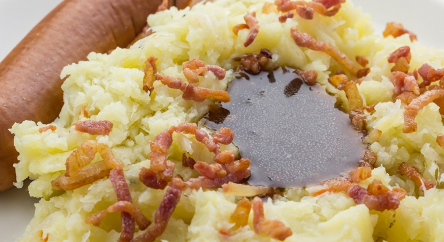

Stamppot Zuurkool

Just like the other dishes on this recipes page, this
is a traditional Dutch, no -nonsense dish, consisting of no more than
four ingredients.
It's an aquired taste, but once accepted into one's heart
it will stay there forever.
Ingredients
- 500g Potatoes
- 500g Zuurkool (sauerkraut)
- 250g bacon rashers
- 1 whole Rookworst
So, how do we make it?
-
Peel the potatoes and put them in a big pot, fill with water to
just submerge the potatoes.
-
Add the kraut on top and cook for 10 minutes.
-
Now it's time to add the Rookworst on top and cook for another 20
minutes.
-
Now pour off the water, mash the potatoes and the kraut together.
-
Take a skillet and bake the rashers until golden brown, add this to
the mash.
-
Add the rookworst on top again, put it on the table and Eetsmakelijk!